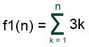

Objetivo:
Que apliques los conocimientos sobre el ciclo WHILE en el
desarrollo de un programa

Forma de trabajo:
Actividad individual

Instrucciones:
- De manera individual, desarrolla el algoritmo y posteriormente el
programa completo en C para cada uno de los ejercicios que se presentan a
continuación.
- Entrega, vía la plataforma, los archivos *.c que contengan los
programas en C. Es importante que al inicio de cada programa coloques el o
los algoritmos que utilizaste.
Construye un programa completo en C libre de warnings y errores, que
incluya las siguientes funciones:
- La función f1 que recibe un valor entero mayor o igual
a uno y regresa el resultado de la siguiente sumatoria:

.
Por ejemplo:
f1(3) =
3(1) + 3(2) + 3(3) = 18
f1(4) = 3(1) + 3(2) + 3(3) + 3(4) = 30
- La función f2
que recibe un valor entero n mayor o igual a uno y regresa el
resultado de la siguiente serie:
f2(N) = 21 - 22 +
23 - 24 + 25....
.
Por
ejemplo:
.
f2(2) =
21 - 22 = - 1
f2(3) =
21 - 22 + 23 = 22
- La función f3 que recibe un valor entero mayor o igual
a uno y regresa el resultado de la siguiente serie:
f3(N)
= 5 * 10 * 15 *...* 5N
Por ejemplo:
f3(2) = 5(1) * 5(2) = 50
f3(3) = 5(1) * 5(2) * 5(3) = 750
- La función f4 que recibe un valor entero mayor o igual
a uno y regresa el resultado de la siguiente sumatoria:
.
f4 (2) =
6.00
f4 (10) = 1063.33
- La función multiplicacion que recibe dos números enteros positivos num1
y num2 y calcula la multiplicación de num1 por num2
utilizando el ciclo while y la operación suma.
.
Por ejemplo:
- La función division que recibe dos números enteros positivos num1
y num2 y calcula la división entera de num1 entre num2 utilizando el
ciclo while y la operación resta.
.
Por ejemplo:
num1 num2
16 -
3 = 13
13 -
3 = 10
10 -
3 = 7
7
- 3 = 4
4
- 3 = 1
1
¿Cuántas restas se
hicieron hasta que num1 fue menor que num2?
5
num1 num2
5 - 3 = 2
2
¿Cuántas restas se hicieron hasta que num1 fue menor
que num2? 1
- El procedimiento series, que despliegue el
siguiente menú en pantalla:
Series y sumatorias:
A. f1
B. f2
C. f3
D. f4
E. Multiplicacion
F. Division
S. Salir
Pulse la opción deseada:
- En la sección del "main()" construya un programa
completo en C que utilice el procedimiento series para
desplegar el menú correspondiente y de acuerdo a la opción
seleccionada por el usuario utiliza la función apropiada de las
implementadas anteriormente. Utiliza el estatuto
de control Switch.
- Recuerde que la captura de datos y validación de valores debe ser
realizada en la sección del "main ( )", pues las funciones NO pueden realizar las tareas de validación, captura de datos o impresión de mensajes. Antes
de utilizar una función se debe validar que el valor de entrada cumpla
con las condiciones de dicha función.
- Incluye el algoritmo de cada función como comentario al inicio del
programa, a excepción del algoritmo del main y del procedimiento series
(estos procedimientos no deben llevar algoritmo).
- Guarda el archivo con el nombre: P_Matricula.c.

Especificaciones de entrega:
- Formato de entrega: c
- Nombre del entregable: P_matrícula.c
- Medio de entrega:
Se entrega en Canvas en la sección de Tarea: While
Instrucciones para enviar tus archivos por Canvas:
- Haz clic en la actividad de
Tarea: While
- Haz clic en el botón de
Entregar tarea.
- En el fólder de Carga
del archivo, haz clic en el botón de Examinar
y localiza el archivo *.py. Si necesitas agregar más
archivos, haz clic en +Agregue otro archivo, haz
clic en el botón de Examinar y localiza el otro
archivo *.py.
- Cuando hayas terminado de
subir tus archivos, haz clic en el botón de Entregar
tarea y listo!!
|